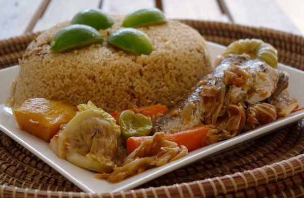

La recette Tchep

Description de la recette tchep
Le Tchep (ou Thiéboudienne) est un plat traditionnel sénégalais à base de riz, de poisson et de légumes.
Ingrédients :
- 500g de riz
- 4 morceaux de poisson (daurade, cabillaud, thon, etc.)
- 2 aubergines
- 2 carottes
- 2 oignons
- 3 tomates
- 1/2 chou blanc
- 4 gousses d'ail
- 1 petit piment
- 2 cubes de bouillon de poisson
- 2 cuillères à soupe d'huile d'arachide
- Sel et poivre
Instructions pour la réalisation du plat
- Lavez le riz et faites-le tremper dans de l'eau froide pendant environ 30 minutes.
- Dans une grande casserole, faites chauffer l'huile d'arachide et faites revenir les oignons
hachés, l'ail écrasé et le piment haché pendant environ 5 minutes.
- Ajoutez les tomates coupées en dés et laissez cuire pendant 5 minutes supplémentaires.
- Ajoutez les morceaux de poisson et les légumes coupés en morceaux (aubergines,
carottes, chou) et les cubes de bouillon de poisson. Ajoutez de l'eau pour couvrir les
ingrédients et portez à ébullition.
- Laissez mijoter à feu moyen pendant environ 20 minutes, en remuant de temps en temps.
- Égouttez le riz et ajoutez-le dans la casserole avec les légumes et le poisson. Ajoutez de
l'eau chaude si nécessaire pour couvrir le riz.
- Salez et poivrez à votre goût, puis laissez cuire à feu doux pendant environ 30 minutes,
jusqu'à ce que le riz soit cuit et que le liquide ait été absorbé.
- Servez chaud dans un grand plat de service.
Bon appétit !
Odin Recette